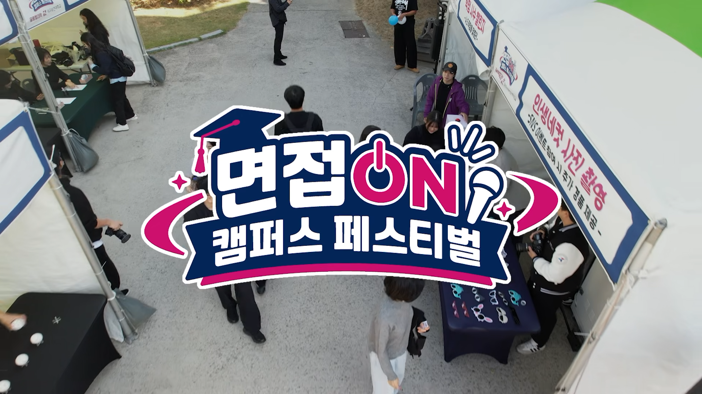
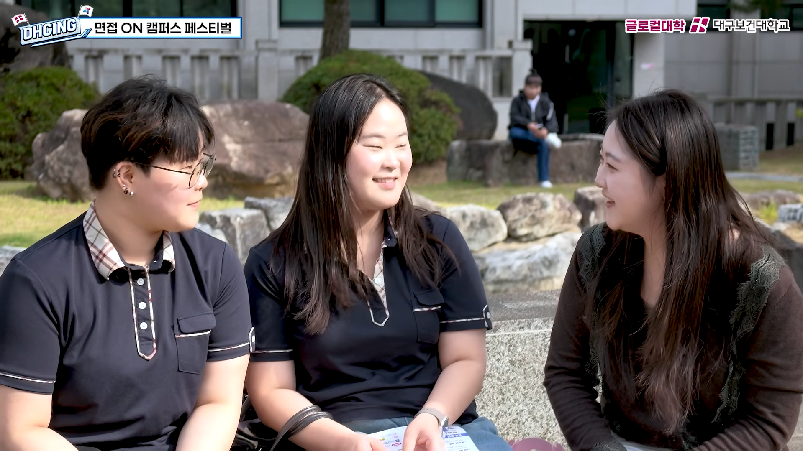
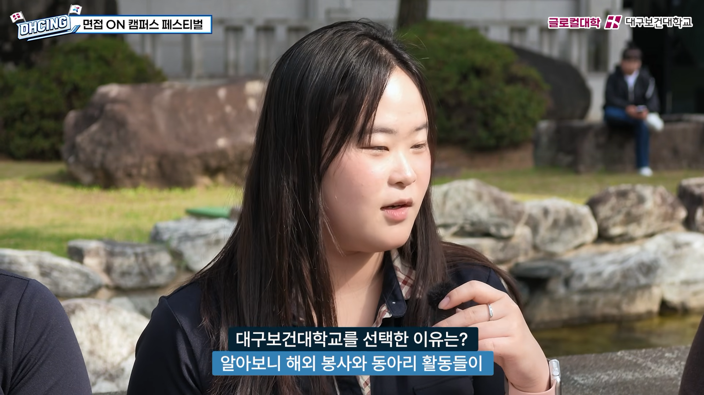
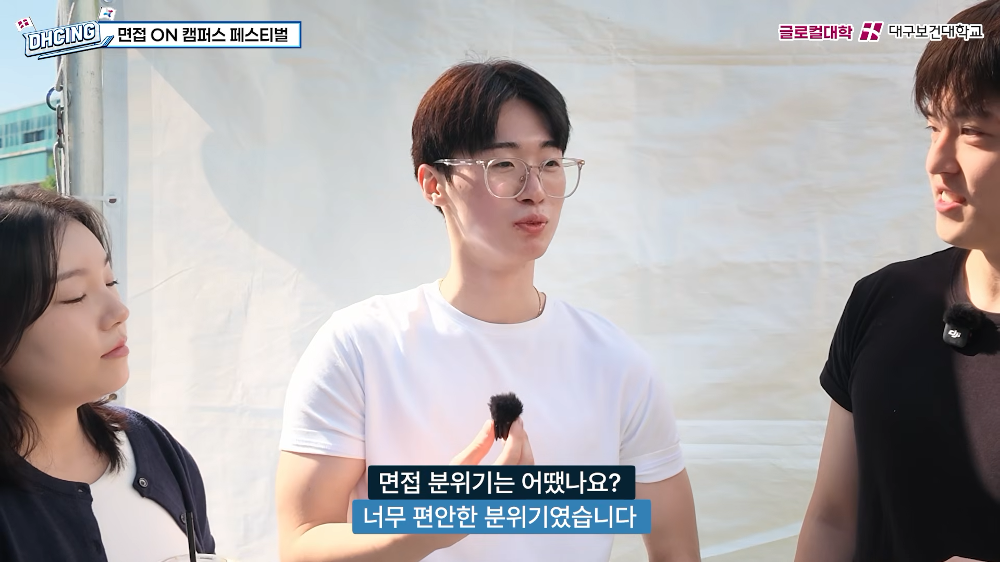
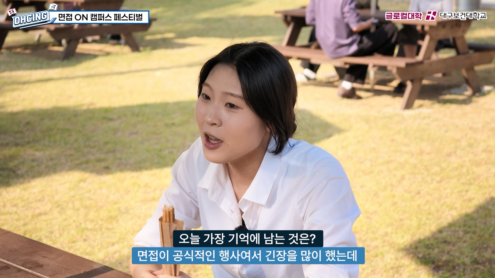
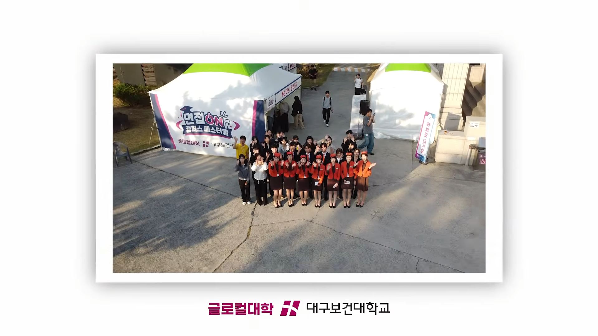
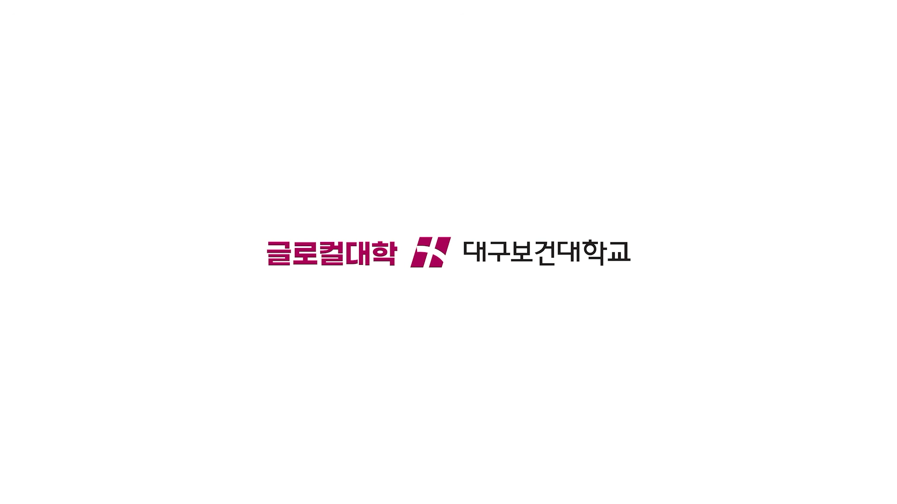

대구보건대학교 면접 행사
대구보건대학교 면접 행사 스케치
대구보건대학교 수시 면접 현장의 생생한 분위기와 예비 신입생들의 다양한 모습을 담아낸 행사 스케치 영상입니다.
예비 신입생들의 인터뷰와 행사에 참여하는 학생들의 자연스러운 모습을 중심으로 구성했으며, 현장의 활기찬 분위기를 전달할 수 있도록 음악을 선정하고 리듬에 맞춘 컷 편집을 진행했습니다. 면접 행사에서 경험할 수 있는 다양한 즐길 거리와 현장의 생동감을 짧고 경쾌한 흐름으로 담아냈습니다.
-
This event highlight video captures the lively atmosphere at Daegu Health University’s early admission interviews and showcases the diverse personalities of prospective freshmen.
The video focuses on interviews with prospective freshmen and candid moments of students participating in the event. Music was carefully selected and the footage was edited to the rhythm of the music to convey the vibrant atmosphere on site. It captures the various activities and the dynamic energy of the event in a short, upbeat sequence.
-
Project Scope
- 1. Event Highlight Editing.
- 2. Music Selection & Rhythm Editing.
- 3. Color Grading & Post-Production.







대구보건대학교 면접 행사 스케치
-
기간 : 2026.11
소속 : 픽셀아크
클라이언트 : 블룸
분야 : 행사 스케치 영상
담당 : 영상 편집 · 음악 선정 · 색보정